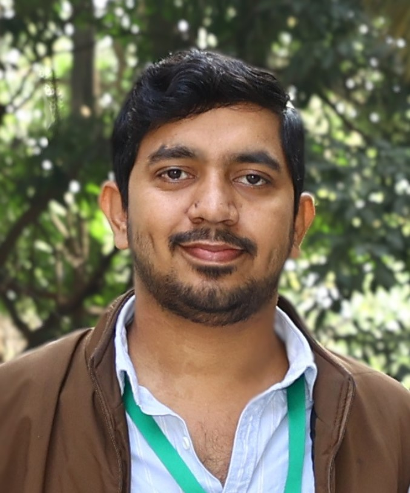

01 / PHOTOCATALYSIS
Photocatalysis using COFs
Conjugated and linkage-engineered COFs for visible/red-light-driven organic transformations, hydrogen evolution and CO₂ photoreduction.
I work at the intersection of materials chemistry, molecular design and sustainable energy science, developing Covalent Organic Frameworks for photocatalysis, energy storage and electrocatalysis.

My research focuses on the rational design and synthesis of functional Covalent Organic Frameworks (COFs) for photocatalytic applications, electrocatalysis and next-generation energy storage.
I am particularly interested in understanding how framework topology, electronic structure, linkage chemistry, local reaction environments and charge-transfer processes determine macroscopic performance.
S. N. Bose National Centre for Basic Sciences, Kolkata
Sidho-Kanho-Birsha University, Purulia
From photon absorption to charge transport and electrochemical reactions, my work explores how porous organic architectures can be engineered for sustainable energy applications.
Conjugated and linkage-engineered COFs for visible/red-light-driven organic transformations, hydrogen evolution and CO₂ photoreduction.
Redox-active and side-chain-functionalized frameworks for lithium-ion batteries, lithium-sulfur batteries and supercapacitors.
Metal-free redox-active porous architectures for oxygen reduction and other energy-conversion reactions.

Advanced Materials, 2026

Chemistry of Materials, 2025

Angewandte Chemie International Edition, 2024
Interested in COFs, photocatalysis, energy storage, electrocatalysis or collaborative materials research? I would be happy to connect.